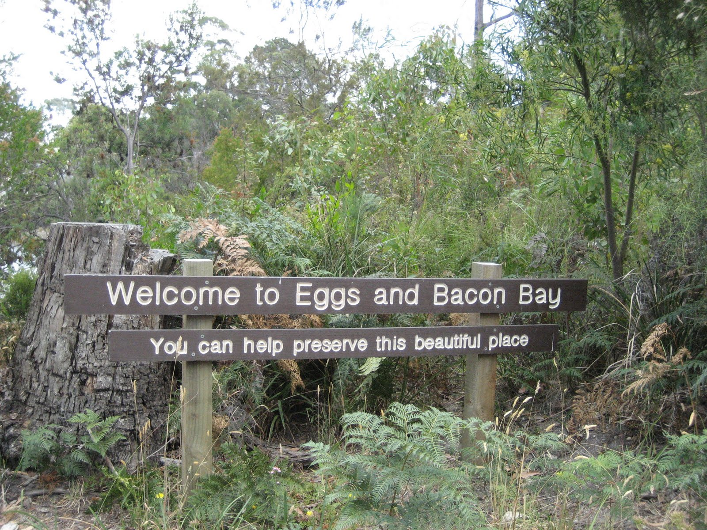
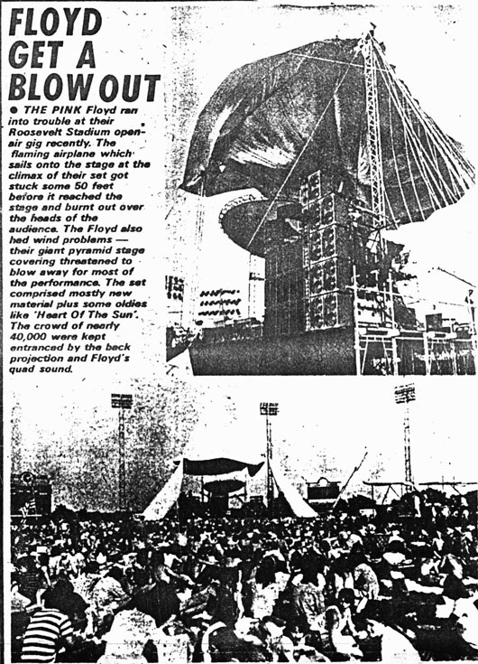

Geospatial Discovery in the Digital Library
We have all of this amazing geospatial content...
Geospatial data is complex...
- Many formats
- At varying scales
- Distributed all around the world
Geospatial content is not just GIS data...
“Everything is related to everything else, but near things are more related than distant things.”
Placenames
Eggs and Bacon Bay, Australia
Placenames
Pink Floyd, Roosevelt Stadium, Jersey City, NJ 1975
A map that does everything
Doesn't do anything well
Why Map Portals Don’t Work
by Brian Timoney
We need specialized discovery tools
Introducing...
GeoBlacklight
and
Blacklight-Maps
GeoBlacklight
A world-class discovery platform for geospatial data
Blacklight + OpenGeoportal Communities
Current status:
Design phase + Community feedback
Demo Time!
Blacklight-Maps
A plugin for Blacklight
Provides a map view for Blacklight results
v0.1.0 tagged this morning
plug for committers
Demo Time!
Next up:
- spatial search
- lon/lat support
- [your input]